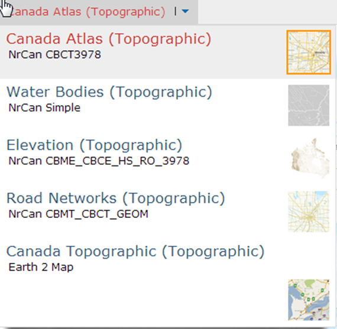
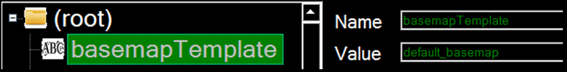
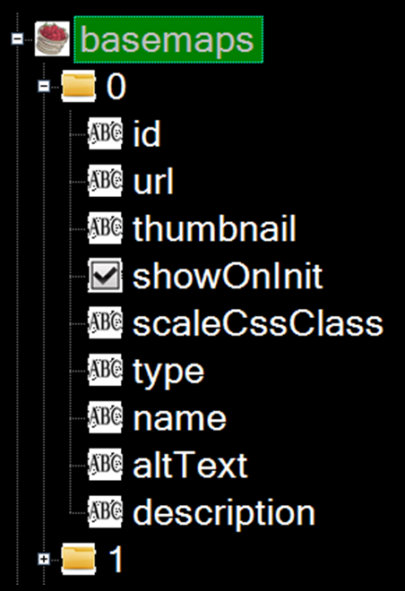

Templating Example
Work in progress
This page is a work in progress and requires review. Please file an issue if information or coding is missing, incorrect or out of sync with the main repository (ramp-pcar/ramp-pcar).
This section will show describe how the templating engine works and the steps to customizing a module using templates. The basemap selector module with be used as an example throughout the article.

How Templating Works
The dropdown menu of the basemap selector is customizable through templating. The template that the basemap selector is using can be specified by editing the “basemapTemplate” field in the JSON config (currently it is using “default_basemap”).

The template uses the JSON configuration file to populate the data in each row. The “basemaps” entry in the JSON configuration file is an array of Objects, each Object describes one basemap.

The templating engine takes each entry in the basemap config and stores it in the data object that becomes available to the template. Below is the default template for the basemap selector, note the use of o.data to populate fields:
<div class='esriBasemapGalleryLabelContainer'>
<span alt='{%= o.data.name %} ({%= o.data.type %})' title='{%= o.data.name %} ({%= o.data.type %})'>{%= o.data.name %}({%=o.data.type%})</span>
<span class='font-xsmall extra'>{%= o.data.description %}</span>
</div><img class='esriBasemapGalleryThumbnail' src='{%=%20o.data.thumbnail%20%}' alt='{%= o.data.altText %}' />The template then uses the data from the config to generate HTML elements to represent the basemap. Note for example in the default template, the “name” and “type” fields in the config are used as the text visible to the user that describes the basemap.
Templating Steps
Developers can change how each entry in the basemap selector dropdown is rendered by following these steps:
- Add a new template to the template file and give it a unique name.
- Update the “basemapTemplate” field in the JSON config to the name of the new template.
- Edit the new template. For example, if the developers would like to also include a year information next to each basemap, indicating what year the basemap was published, they could substitute the line:
{%= o.data.name %} ({%= o.data.type %})with:{%= o.data.name %}({%= o.data.type %}, {%= o.data.year %})instead. - If any data is needed by the template which does not currently exist in the JSON configuration file, add it. For example in this case, the developer would need to add a “year” field to each entry in the basemap selector configuration.
- Date modified: